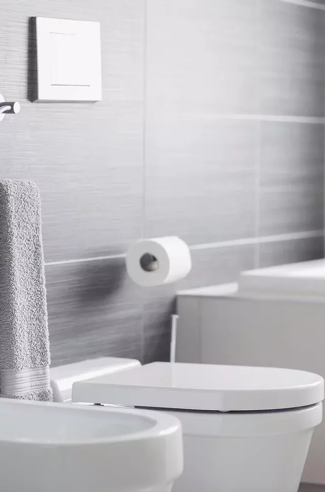
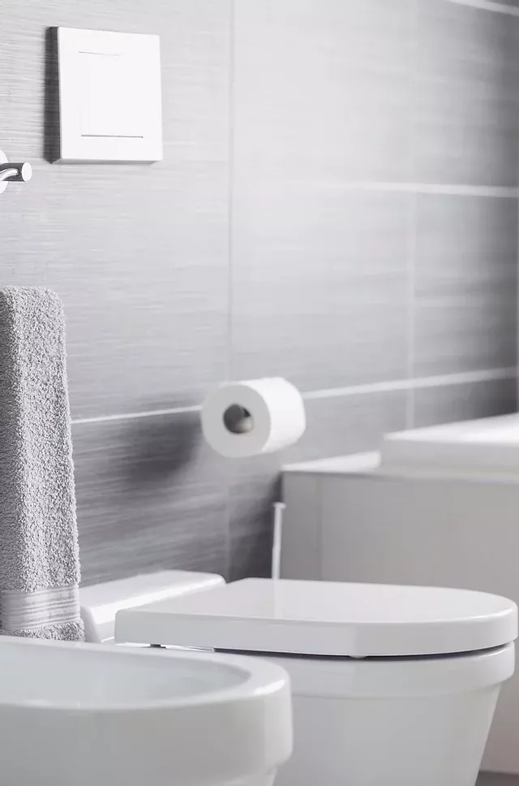

Our Products
Utensils Detergent


- Our Utensils detergent is a cleaning solution specifically designed to clean utensils such as plates, bowls, glasses, and cutlery.
- The Utensils detergent is often formulated to effectively remove food residue, grease, and stains from the surface of utensils,
leaving them clean and hygienic. It can be used in both manual and dishwasher cleaning.
- When cleaning utensils, it is best to use an all-purpose dish detergent.
- Be sure to use a gentle detergent, as harsher detergents can damage the utensils.
- It should be gentle on your utensils and doesn't leave a soapy residue.
Bathroom Detergent


- Our detergent is used to remove dirt, soap scum, and other debris from surfaces including tile, porcelain and acrylic in the bathroom.
- Some common ingredients found in our bathroom detergents are surfactants, fragrances, enzymes, and bleach.
- Surfactants work by breaking down dirt and oils so they can be washed away.
Fragrances are added to make the detergent smell good.
- Enzymes work to break down specific types of stains and odors.
Bleach acts as a disinfectant and helps to brighten whites.
- When used as directed, bathroom detergent can help keep surfaces clean and free of germs and dirt.
Toilet Detergent

 

- Our toilet detergent is a cleaning solution used to clean toilets and remove stains, dirt, and grime.
- It is specifically formulated to clean and sanitize the surfaces of toilets, keeping them fresh and hygienic.
- It usually comes in liquid form and can be scented or unscented.
It can be used for manual cleaning or with a toilet cleaning brush.
- The ingredients in toilet detergents can include enzymes, fragrances and specialized ingredients
to address specific cleaning needs such as removing hard water stains or combating unpleasant odors.
- It can be poured into the toilet bowl or spread onto the surface with a scrub brush and can also leave a pleasant scent.